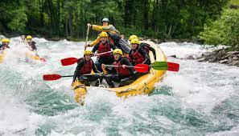
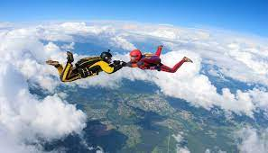

TAKE a BREAK!

Best places for rafting in India
- Rishikesh
- Kullu-Manali
- Indus River
- Yamuna River
- Tons River
- Teesta River
- Brahmaputra River
- Lohit River
- Kameng River
- Barapole
- Kundalika River

Best places for sky diving in India
- Aamby Valley
- Deesa
- Dhana
- Narnaul
- Bir Billing
- Mysore
- Aligarh
- Pondicherry